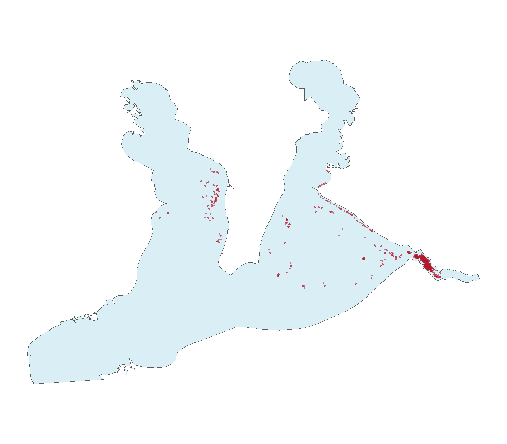

| Parameter | Raw observations | Raw stations | Retained observations | Retained stations | Spatial bins |
|---|---|---|---|---|---|
| Chlorophyll-a | 1,847 | 54 | 666 | 48 | 27 |
| DO | 6,261 | 169 | 3,010 | 145 | 68 |
| Salinity | 6,994 | 159 | 3,400 | 135 | 67 |
| Turbidity | 3,402 | 146 | 1,429 | 122 | 61 |
| Temperature | 7,161 | 169 | 3,441 | 145 | 68 |
Results
Water-Quality Data Coverage
There were 25,665 raw observations from across all five parameter datasets, representing 174 unique site locations. Chlorophyll-a had 1,845 records from 54 sites. Processing resulted in 27 binned values using 666. Dissolved Oxygen had 6,261 observations from 169 sites. Processing reduced the data to 68 binned values using 3,010 observations. Salinity returned 6,994 observation values from 159 sites. The data was processed into 67 binned values using 3,400 observations. Turbidity had 3,402 observed values from 146 sites. After processing there were 61 binned values using 1,429 observations. Water temperature had 7,161 raw observations from 169 sites. Data processing returned 68 binned values using 3,441 observations. Overall, data processing returned 291 parameterized data values using 11,946 fo the 25,665 original values, representing 46.5% of the original dataset (Table 1).
For all parameters, the data was heavily skewed spatially, with the majority of samples located in Escambia and Pensacola Bays. Chlorophyll-a in particular had much fewer sites and almost no observations located in the eastern half of the study area. Due to such a lack of spatial distribution, chlorophyll-a was subsequently dropped from the analysis (Figure 1).

Environmental Predictor Results
Each parameter (save for chlorophyll-a) was interpolated into predicted surface rasters using an inverse-path distance weighting algorithm. To ensure the highest accuracy was achieved, a sensitivy analysis was conducted on each parameter model using 36 distance-power/range combinations, which were in turn evaluated across five random five-fold spatial partitions. Powers ranged from 0.25 to 3.00, and maximum range values evaluated were 5, 10, 15, and 20 km (Figure 2).
While the results of every sensitivity analysis will be reported here, it should be noted that after running all parameters it was decided that a distance power of 0.25 and a max range of 10km was to be used. This decision was made as there was little variation in results of the sensitivity analysis and a smoother prediction surface was preferred to better represent the smoother gradients found in the real world.

Dissolved Oxygen
Dissolved oxygen sensitivity had a mean MAE ranging from 0.426 to 0.507 mg/L. The lowest mean MAE with 100% prediction was 0.425mg/L using a distance power of 0.75 and max range of 10km Table 2. The predicted rater surface values ranged from 5.28mg/L to 7.99mg/L (n = 33,792; µ = 6.52; σ = 0.26; Table 3). The final prediction model achieved 100% coverage with a MAE of 0.431 mg/L (σ = 0.006) with RMSE = 0.552 mg/L (σ = 0.004). The model tended to over predict by +0.013 mg/L. Spatially, dissolved oxygen generally decreased in the western portions of the study area. With the lowest values appearing in East Bay and northern Blackwater Bay Figure 3.
Salinity
The salinity sensitivity analysis had a mean MAE ranging from 2.397 ppt to 3.125 ppt. The lowest reported MAE with 100% model coverage was 2.49 ppt using distance power 0.50 and max range of 10km. The absolute lowest mean MAE was 2.397 ppt was achieved using distance power of 3.00 and a max range of 5km , but model coverage fell to 96.1%. The difference in mean MAE between the lowest achieved DP-MR combination and the actual DP-MR combination used was 0.000119 ppt Table 2. Spatial cross-validation of the final model fit had a MAE of 2.49 ppt (σ = 0.036) and RMSE 3.444 ppt (σ = 0.024). The model slightly over predicted salinity values (+0.140 ppt) and achieved 100% coverage. The predicted values ranged from 2.31 to 26.73 ppt (n = 33,792; µ = 16.36 ppt; σ = 3.14; Table 3). Spatially, salinity generally decreased from west to east with the lowest values being in the northern Blackwater Bay and the highest values located in the southwestern region of Pensacola Bay Figure 3.
Turbidity
The sensitivity analysis for turbidity reported a mean MAE range from 0.696 to 0.847 NTU. The lowest mean MAE was 0.696 NTU (DP = 1.00, MR = 15km) with 95.1% model coverage Table 2. The final model fit produced a MAE = 0.745 NTU (σ = 0.018) with RMSE = 0.937 NTU (σ = 0.026). Overall the model slightly under predicted by -0.010 NTU and achieved 95.1% coverage. The final predicted surface values ranged from 0.03 NTU to 5.23 NTU (n = 33,790; µ = 2.23 NTU; σ = 0.47; Table 3). Spatially, turbidity generally decreased from north to south, with the highest values occuring near the mouth of Escambia River and the lowest values occuring in the southwestern portion of Pensacola Bay Figure 3.
Water Temperature
Mean MAE for the water temperature sensitivity analysis ranged from 0.978 to 1.135 degrees C. The lowest mean MAE was 0.978 degrees C with 100% model coverage (DP = 0.75, MR = 10km; Table 2). The final model had a MAE of 0.988 degrees C (σ = 0.015) and RMSE was 1.163 degrees C (σ = 0.014). The model generally under predicted water temperature by -0.063 degrees C with 100% model coverage. The resulting prediction surface ranged from 25.93 to 30.43 degrees C (n = 33,792; µ = 27.66°C; σ = 0.41°C; Table 3). Water temperature was generally lower in the eastern portions of the study area, with the coolest values trending toward Blackwater Bay Figure 3.
- Keep Figure Figure 2, Table Table 2, Table Table 3, and Figure Figure 3 together as shared outputs, referring to the relevant parameter from each subsection. Figure ?@fig-processed-mean-distributions supports the processed-data summaries.
- The MaxEnt prediction covers a smaller area because it requires complete values for all six predictors.
| Parameter | Units | Distance power | Maximum range (km) | Mean MAE (SD) | Mean RMSE (SD) | Mean bias | Mean coverage |
|---|---|---|---|---|---|---|---|
| DO | mg/L | 0.25 | 10 | 0.431 (0.006) | 0.552 (0.004) | 0.013 | 100.0% |
| Salinity | ppt | 0.25 | 10 | 2.490 (0.036) | 3.444 (0.024) | 0.140 | 100.0% |
| Turbidity | NTU | 0.25 | 10 | 0.745 (0.018) | 0.937 (0.026) | -0.010 | 95.1% |
| Temperature | degrees C | 0.25 | 10 | 0.988 (0.015) | 1.163 (0.014) | -0.063 | 100.0% |
| Parameter | Units | Minimum | Maximum | Predicted cells | Cell size |
|---|---|---|---|---|---|
| DO | mg/L | 5.28 | 7.99 | 33,792 | 100 x 100 m |
| Salinity | ppt | 2.31 | 26.73 | 33,792 | 100 x 100 m |
| Turbidity | NTU | 0.03 | 5.23 | 33,790 | 100 x 100 m |
| Temperature | degrees C | 25.93 | 30.43 | 33,792 | 100 x 100 m |

Oyster Occurrence Data
